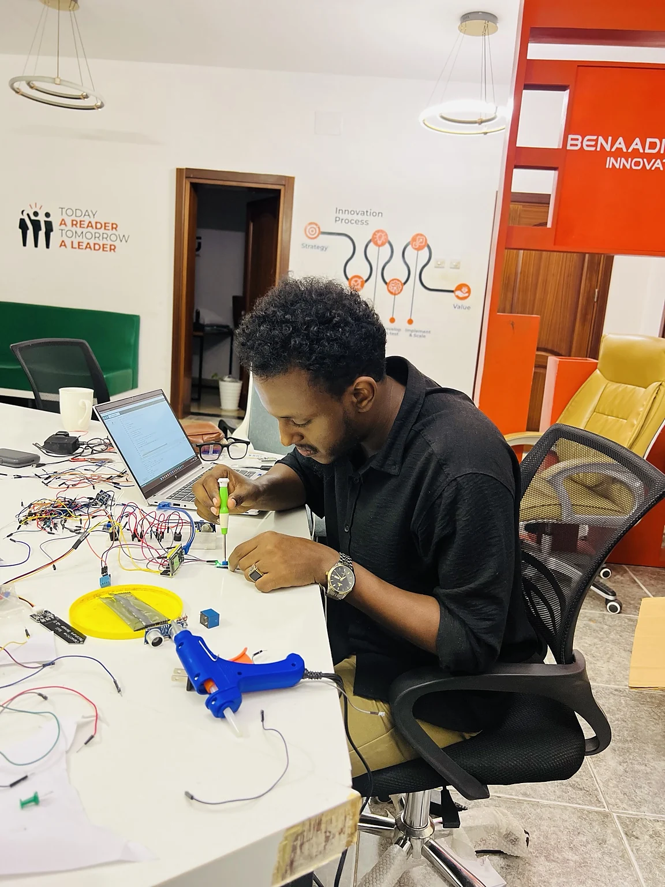
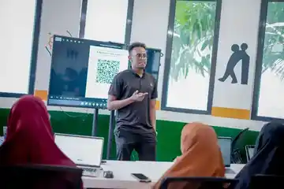
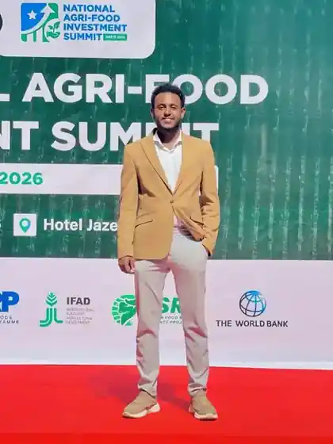

I24 · PROTOTYPE SUPPORT
Agritech monitoring concept support spanning research, sensor architecture, product framing and dashboard thinking.
MOGADISHU // DIGITAL SYSTEMS · DATA · INNOVATION
Economics professional working at the intersection of digital systems, data, research, innovation and business development, translating technology and information into practical solutions for organisations, programmes and communities.
Agritech monitoring concept support spanning research, sensor architecture, product framing and dashboard thinking.
Participant registration, structured records, attendance workflows, tracking and reporting support.
Digital collection, field monitoring, quality control, cleaning, analysis, visualisation and reporting.
Programme design, stakeholder engagement, entrepreneurship activities, proposals, workshops and partnerships.
Training, onboarding, troubleshooting, documentation and iterative support so tools work in practice.
What I actually do
Workflow mapping, digital forms, participant systems, dashboards and implementation support.
Survey design, field data quality, quantitative analysis, visualisation and evidence for decisions.
Entrepreneurship programmes, business development, stakeholder engagement and practical technology adoption.
Market, incentive, cost and enterprise thinking applied alongside data and programme implementation.
Open a case file for the problem, system and contribution behind each build.
Prototype-stage storage monitoring concept combining sensor inputs and a digital dashboard to surface grain-storage risks earlier.
Stage · prototype / concept development
Participant records, QR-based check-in, attendance monitoring, assessment coordination and user support for a practical AI, research and data-analysis programme.
Context · Benadir University Innovation Hub
End-to-end research support from digital instruments and field quality control to cleaning, analysis, visualisation and reporting.
Focus · defensible data from field to decisionProgramme design, entrepreneurship activities, partner outreach, workshops, stakeholder coordination, documentation and delivery support.
Role · Head of Innovations & Business Development
Interactive student workspace exploring AI-assisted learning, course workflows, attendance and educational interfaces.
Private build · demo on requestRetail operating-system work spanning inventory, POS, suppliers, reporting and operational controls.
Private build · demo on requestDigital idea-registration and tracking workflow supporting entrepreneurship and innovation programmes at BU iHub.
Programme systemOccupation-ranking experiment built around structured challenge data and role matching.
Private build · demo on requestA multidisciplinary toolkit organised around the work Hassan actually performs, rather than a wall of technology logos.
R · Excel · Stata · SPSS · quantitative analysis · data visualisation
KoboToolbox · XLSForm · digital forms · QR-based workflows · structured records · workflow automation
Survey design · field data management · data quality · monitoring · reporting · research documentation
Digital dashboards · web systems · IoT/sensor concepts · AI-assisted workflows where appropriate
Business development · entrepreneurship · programme design · stakeholder engagement · innovation management
Training · facilitation · presentations · documentation · visual materials · digital content · user support
Hassan’s implementation approach connects operational needs with practical tools, user support and continuous improvement.
These are public signals indexed outside this website — leadership, teaching, professional network and recommendations.
SOMES publicly lists Hassan Abdi Hassan as YEE Chairperson, representing Benadir University, following an application, shortlisting and interview process.
Independent source ↗ SINA SOMALIA · 2026 AI & Innovation SpeakerSINA publicly thanked Hassan for an applied session on AI, real-world use cases and opportunities for Somali youth.
Public post ↗ LINKEDIN · SEP 2026 1K followers · 500+ connectionsA growing public professional network around innovation, evaluation, research, digital transformation and youth development.
View profile ↗Select a story. Every image opens the context behind the moment.

A public-facing moment connecting innovation work with Somalia’s agri-food ecosystem and investment conversations.
CLICK A FRAME TO BRING IT FORWARD · DRAG / SCROLL ON MOBILE
A career connecting markets, business, data, technology, research, innovation and programme delivery.
Supporting youth participation in evaluation, research, learning and evidence-informed decision-making while representing Benadir University.
Programme design, innovation activities, business development, training coordination, stakeholder engagement, partner outreach, research/data work, workshops, events, proposals, documentation and communications.
Digital data collection, field monitoring, quality control, cleaning, analysis and research support across development and public-health studies.
Customer onboarding, digital financial-services engagement, financial literacy, relationship management and business-development support.
Student and entrepreneur engagement, financial literacy, access-to-finance support, workshops and relationship development.
Foundation in markets, incentives, costs, enterprise behaviour and quantitative thinking that now complements digital and data work.
“His dedication, organizational skills and proactive approach made a significant impact on our team.”
“Hassan is the epitome of diligence and reliability.”
Publicly listed certifications span climate, sustainable finance, statistics, safeguarding, accounting and management.
Translate operational workflows into usable forms, records, dashboards, tracking and implementation support.
Design collection workflows, protect data quality, analyse evidence and communicate findings clearly.
Train, onboard, troubleshoot, document and iterate so a solution is actually used rather than merely launched.
Connect programmes, entrepreneurship, stakeholders, communications and business-development priorities.
For digital-systems, data, research, M&E, innovation, business-development, technology-adoption and programme opportunities.
hassanabdihassan21@gmail.com ↗